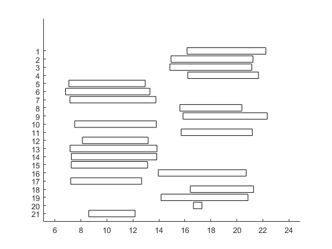
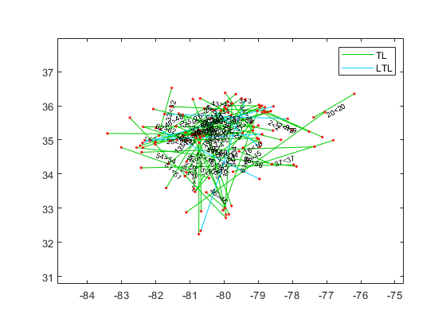
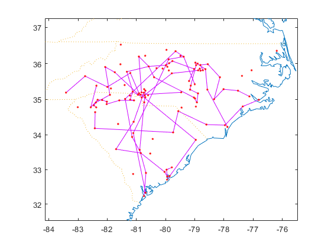
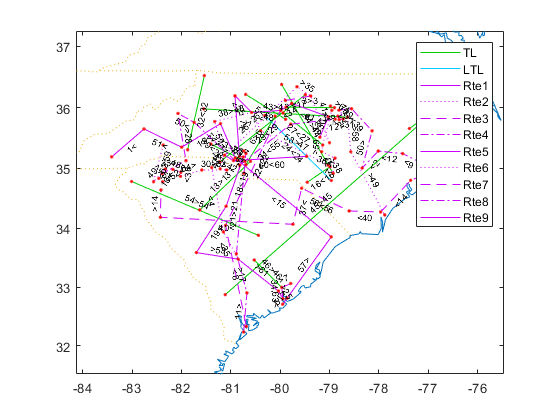

Contents
Q1b
clear
C = [
0 8 6 9 1 5
3 0 1 5 4 2
9 2 0 3 1 1
8 2 1 0 10 6
6 7 10 1 0 10
6 2 5 2 1 0]
loc = [1 5 2 6 4 3 1];
[loc, TC] = tsp2opt(loc,C);
fprintf(['The final location sequence determined after applying the'...
'twoopt improvement procedure is %s, with total cost = %d.\n'],...
num2str(loc), TC);
C =
0 8 6 9 1 5
3 0 1 5 4 2
9 2 0 3 1 1
8 2 1 0 10 6
6 7 10 1 0 10
6 2 5 2 1 0
The final location sequence determined after applying thetwoopt improvement procedure is 1 5 4 2 3 6 1, with total cost = 12.
Q2b
clear
T = [
0 2 2 2 1 2
2 0 3 2 3 3
2 3 0 3 2 2
2 2 3 0 3 1
1 3 2 3 0 3
2 3 2 1 3 0];
mdisp(T)
sh = vec2struct('b',1,'e',[4 2 5 3 6]);
sh = vec2struct(sh,'tU',0, 'temin',[9 9 15 18 21],'temax',[18 12 18 21 24]);
tr = struct('b',1,'e',1,'tbmin',6,'tbmax',24,'temin',6,'temax',24);
sdisp(sh)
[TC,Xflg,out] = rteTC([1 2 3 4 5 1 2 3 4 5],sh,T,tr);
TC,Xflg
sdisp(out,false);
fprintf(['The minimum total time span needed to complete all '...
'deliveries and return to the depot is %d hours.\n'], TC)
T: 1 2 3 4 5 6
-:------------------
1: 0 2 2 2 1 2
2: 2 0 3 2 3 3
3: 2 3 0 3 2 2
4: 2 2 3 0 3 1
5: 1 3 2 3 0 3
6: 2 3 2 1 3 0
sh: b e tU temin temax
--:------------------------
1: 1 4 0 9 18
2: 1 2 0 9 12
3: 1 5 0 15 18
4: 1 3 0 18 21
5: 1 6 0 21 24
TC =
15
Xflg =
1
out: Rte Loc Cost Arrive Wait TWmin Start LU Depart TWmax Total
---:----------------------------------------------------------------------
1: 0 1 0 0 0 6 8 0 8 24 0
2: 1 1 0 8 0 6 8 0 8 24 0
3: 2 1 0 8 0 6 8 0 8 24 0
4: 3 1 0 8 0 6 8 0 8 24 0
5: 4 1 0 8 0 6 8 0 8 24 0
6: 5 1 0 8 0 6 8 0 8 24 0
7: 1 4 2 10 0 9 10 0 10 18 2
8: 2 2 2 12 0 9 12 0 12 12 2
9: 3 5 3 15 0 15 15 0 15 18 3
10: 4 3 2 17 1 18 18 0 18 21 3
11: 5 6 2 20 1 21 21 0 21 24 3
12: 0 1 2 23 0 6 23 0 23 24 2
The minimum total time span needed to complete all deliveries and return to the depot is 15 hours.
Q3b
clear
r123 = [2 3 2 1 3 1];
D = [
0 180 320 100 100 40
180 0 140 80 240 140
320 140 0 220 300 280
100 80 220 0 240 60
180 240 300 240 0 220
40 140 280 60 220 0];
ppi = 125;
tr = struct('r',2,'Kwt',25,'Kcu',2750);
sh = vec2struct('f',[200 300 100],'s',[20 5 10],...
'b',[6 3 2],'e',[5 1 4],'v',[20000 5000 10000],'a',1,'h',.3);
sh = vec2struct(sh,'d',diag(D([sh.b],[sh.e])));
sdisp(sh)
[TLC,q,isLTL] = minTLC(sh,tr,ppi,D,r123)
sh: f s b e v a h d
--:------------------------------------
1: 200 20 6 5 20,000 1 0.3 220
2: 300 5 3 1 5,000 1 0.3 320
3: 100 10 2 4 10,000 1 0.3 80
TLC =
1.0550e+05
q =
5.8929
1.9643
3.9286
isLTL =
logical
0
Q4
Add depot: Use end location of shipment 1 as depot for all shipments
clear
DC = table2array(readtable('HW8data.xlsx','Sheet', 1));
DC = flip(DC);
Cust = readtable('HW8data.xlsx','Sheet', 2);
XY_c = [Cust.Lon Cust.Lat];
XY = [DC; XY_c];
D = dists(XY,XY,'mi')*1.2;
q = Cust.Pkg;
s = 1;
maxtime = 7;
temin = [];
temax = [];
for i = 1:size(XY_c,1)
if strcmp(Cust.T_W(i), 'M')
temin = [temin 8];
temax = [temax 12];
elseif strcmp(Cust.T_W(i), 'A')
temin = [temin 12];
temax = [temax 17];
else
temin = [temin 17];
temax = [temax 21];
end
end
sh = vec2struct('b',1,'e',2:size(XY,1), 'q', q, 's', s);
sh = vec2struct(sh,'tU', 2/60,'temin',temin,'temax',temax);
tr = struct('b',1,'e',1, 'Kcu',99999, 'Kwt', 35);
sdisp(sh)
sh: b e q s tU temin temax
---:------------------------------------
1: 1 2 2 1 0.0333 12 17
2: 1 3 2 1 0.0333 17 21
3: 1 4 4 1 0.0333 17 21
4: 1 5 1 1 0.0333 8 12
5: 1 6 4 1 0.0333 8 12
6: 1 7 2 1 0.0333 8 12
7: 1 8 3 1 0.0333 8 12
8: 1 9 2 1 0.0333 8 12
9: 1 10 2 1 0.0333 8 12
10: 1 11 1 1 0.0333 8 12
11: 1 12 1 1 0.0333 17 21
12: 1 13 5 1 0.0333 12 17
13: 1 14 2 1 0.0333 17 21
14: 1 15 2 1 0.0333 8 12
15: 1 16 2 1 0.0333 12 17
16: 1 17 2 1 0.0333 17 21
17: 1 18 3 1 0.0333 8 12
18: 1 19 2 1 0.0333 17 21
19: 1 20 1 1 0.0333 17 21
20: 1 21 2 1 0.0333 8 12
21: 1 22 3 1 0.0333 8 12
22: 1 23 2 1 0.0333 12 17
23: 1 24 3 1 0.0333 8 12
24: 1 25 2 1 0.0333 12 17
25: 1 26 2 1 0.0333 8 12
26: 1 27 2 1 0.0333 12 17
27: 1 28 3 1 0.0333 17 21
28: 1 29 1 1 0.0333 17 21
29: 1 30 2 1 0.0333 12 17
30: 1 31 3 1 0.0333 8 12
31: 1 32 2 1 0.0333 8 12
32: 1 33 3 1 0.0333 8 12
33: 1 34 3 1 0.0333 12 17
34: 1 35 2 1 0.0333 8 12
35: 1 36 2 1 0.0333 8 12
36: 1 37 2 1 0.0333 12 17
37: 1 38 3 1 0.0333 12 17
38: 1 39 2 1 0.0333 17 21
39: 1 40 1 1 0.0333 17 21
40: 1 41 2 1 0.0333 8 12
41: 1 42 1 1 0.0333 8 12
42: 1 43 2 1 0.0333 17 21
43: 1 44 2 1 0.0333 17 21
44: 1 45 2 1 0.0333 17 21
45: 1 46 2 1 0.0333 17 21
46: 1 47 2 1 0.0333 12 17
47: 1 48 4 1 0.0333 8 12
48: 1 49 1 1 0.0333 8 12
49: 1 50 3 1 0.0333 17 21
50: 1 51 3 1 0.0333 8 12
51: 1 52 4 1 0.0333 12 17
52: 1 53 2 1 0.0333 8 12
53: 1 54 1 1 0.0333 17 21
54: 1 55 2 1 0.0333 8 12
55: 1 56 4 1 0.0333 17 21
56: 1 57 1 1 0.0333 17 21
57: 1 58 2 1 0.0333 17 21
58: 1 59 1 1 0.0333 17 21
59: 1 60 2 1 0.0333 8 12
60: 1 61 3 1 0.0333 8 12
61: 1 62 4 1 0.0333 17 21
62: 1 63 2 1 0.0333 17 21
63: 1 64 2 1 0.0333 17 21
64: 1 65 3 1 0.0333 17 21
65: 1 66 4 1 0.0333 8 12
66: 1 67 1 1 0.0333 8 12
67: 1 68 1 1 0.0333 8 12
68: 1 69 2 1 0.0333 17 21
69: 1 70 1 1 0.0333 8 12
70: 1 71 2 1 0.0333 17 21
71: 1 72 3 1 0.0333 12 17
72: 1 73 2 1 0.0333 17 21
73: 1 74 2 1 0.0333 8 12
74: 1 75 1 1 0.0333 8 12
75: 1 76 2 1 0.0333 8 12
76: 1 77 5 1 0.0333 17 21
77: 1 78 2 1 0.0333 17 21
78: 1 79 1 1 0.0333 12 17
79: 1 80 2 1 0.0333 17 21
80: 1 81 1 1 0.0333 8 12
81: 1 82 1 1 0.0333 17 21
82: 1 83 1 1 0.0333 12 17
83: 1 84 1 1 0.0333 12 17
84: 1 85 1 1 0.0333 17 21
85: 1 86 1 1 0.0333 17 21
86: 1 87 2 1 0.0333 8 12
87: 1 88 2 1 0.0333 8 12
88: 1 89 3 1 0.0333 17 21
89: 1 90 2 1 0.0333 17 21
90: 1 91 1 1 0.0333 17 21
91: 1 92 1 1 0.0333 17 21
92: 1 93 2 1 0.0333 8 12
93: 1 94 2 1 0.0333 17 21
94: 1 95 3 1 0.0333 8 12
95: 1 96 3 1 0.0333 8 12
96: 1 97 2 1 0.0333 8 12
97: 1 98 1 1 0.0333 17 21
98: 1 99 6 1 0.0333 12 17
99: 1 100 3 1 0.0333 8 12
100: 1 101 1 1 0.0333 17 21
101: 1 102 2 1 0.0333 12 17
102: 1 103 3 1 0.0333 17 21
103: 1 104 2 1 0.0333 17 21
104: 1 105 3 1 0.0333 12 17
105: 1 106 2 1 0.0333 12 17
106: 1 107 2 1 0.0333 17 21
107: 1 108 1 1 0.0333 8 12
108: 1 109 4 1 0.0333 17 21
109: 1 110 4 1 0.0333 8 12
110: 1 111 6 1 0.0333 17 21
111: 1 112 4 1 0.0333 17 21
112: 1 113 1 1 0.0333 8 12
113: 1 114 3 1 0.0333 17 21
114: 1 115 1 1 0.0333 17 21
115: 1 116 3 1 0.0333 8 12
116: 1 117 3 1 0.0333 8 12
117: 1 118 1 1 0.0333 8 12
118: 1 119 5 1 0.0333 8 12
119: 1 120 1 1 0.0333 8 12
120: 1 121 2 1 0.0333 17 21
121: 1 122 1 1 0.0333 12 17
122: 1 123 1 1 0.0333 17 21
123: 1 124 2 1 0.0333 12 17
124: 1 125 3 1 0.0333 8 12
125: 1 126 3 1 0.0333 8 12
126: 1 127 2 1 0.0333 8 12
127: 1 128 1 1 0.0333 8 12
128: 1 129 4 1 0.0333 8 12
129: 1 130 2 1 0.0333 17 21
130: 1 131 2 1 0.0333 17 21
131: 1 132 1 1 0.0333 8 12
132: 1 133 5 1 0.0333 8 12
133: 1 134 1 1 0.0333 8 12
134: 1 135 3 1 0.0333 17 21
135: 1 136 2 1 0.0333 8 12
136: 1 137 1 1 0.0333 12 17
137: 1 138 2 1 0.0333 17 21
138: 1 139 1 1 0.0333 12 17
139: 1 140 2 1 0.0333 17 21
140: 1 141 1 1 0.0333 12 17
141: 1 142 1 1 0.0333 8 12
142: 1 143 2 1 0.0333 17 21
143: 1 144 3 1 0.0333 17 21
144: 1 145 3 1 0.0333 8 12
145: 1 146 4 1 0.0333 12 17
146: 1 147 2 1 0.0333 17 21
147: 1 148 3 1 0.0333 8 12
148: 1 149 2 1 0.0333 17 21
149: 1 150 2 1 0.0333 17 21
150: 1 151 1 1 0.0333 8 12
151: 1 152 2 1 0.0333 12 17
152: 1 153 2 1 0.0333 8 12
153: 1 154 3 1 0.0333 8 12
154: 1 155 2 1 0.0333 8 12
155: 1 156 2 1 0.0333 8 12
156: 1 157 1 1 0.0333 17 21
157: 1 158 3 1 0.0333 8 12
158: 1 159 2 1 0.0333 8 12
159: 1 160 1 1 0.0333 17 21
160: 1 161 2 1 0.0333 17 21
161: 1 162 4 1 0.0333 17 21
162: 1 163 1 1 0.0333 17 21
163: 1 164 2 1 0.0333 8 12
164: 1 165 2 1 0.0333 12 17
165: 1 166 2 1 0.0333 8 12
166: 1 167 5 1 0.0333 12 17
167: 1 168 4 1 0.0333 12 17
168: 1 169 3 1 0.0333 17 21
169: 1 170 3 1 0.0333 17 21
170: 1 171 1 1 0.0333 17 21
171: 1 172 1 1 0.0333 12 17
172: 1 173 3 1 0.0333 12 17
173: 1 174 3 1 0.0333 8 12
174: 1 175 3 1 0.0333 12 17
175: 1 176 1 1 0.0333 17 21
176: 1 177 4 1 0.0333 8 12
177: 1 178 1 1 0.0333 12 17
178: 1 179 2 1 0.0333 8 12
179: 1 180 2 1 0.0333 8 12
180: 1 181 2 1 0.0333 8 12
Get road network
expansionAroundXY = 0.12;
[XY2,IJD,isXY,isIJD] = subgraph(usrdnode('XY'),...
isinrect(usrdnode('XY'),boundrect(XY,expansionAroundXY)),...
usrdlink('IJD'));
Label type of road
s = usrdlink(isIJD);
isI = s.Type == 'I';
isIR = isI & s.Urban == ' ';
isIU = isI & ~isIR;
isR = s.Urban == ' ' & ~isI;
isU = ~isI & ~isR;
Add connector roads from cities to road network
[IJD11,IJD12,IJD22] = addconnector(XY,XY2,IJD);
Convert road distances to travel times (needs to be after ADDCONNECTOR)
v.IR = 70;
v.IU = 50;
v.R = 45;
v.U = 20;
v.C = 15;
IJT = IJD;
IJT(isIR,3) = IJD(isIR,3)/v.IR;
IJT(isIU,3) = IJD(isIU,3)/v.IU;
IJT(isR,3) = IJD(isR,3)/v.R;
IJT(isU,3) = IJD(isU,3)/v.U;
IJT22 = IJD22;
IJT22(:,3) = IJT(:,3);
IJT12 = IJD12;
IJT12(:,3) = IJD12(:,3)/v.C;
Shortest time routes
n = size(XY,1);
[T,P] = dijk(list2adj([IJT12; IJT22]),1:n,1:n);
Construct & improve routes:
rTDh0 = @(rte) rteTC(rte,sh,T,tr);
rTDh = @(rte) myrteTC(rte,rTDh0,maxtime);
tic
IJS = pairwisesavings(rTDh,sh); toc
tic
r = twoopt(savings(rTDh,sh,IJS),rTDh); toc
Elapsed time is 132.826609 seconds.
Elapsed time is 117.664982 seconds.
Display route output structure
[TC,Xflg,out] = rTDh0(r);
Bars=[];
for i = 1:length(out), Bars=[Bars; [out(i).Depart(1) out(i).Depart(end)]]; end
gantt(num2cell(Bars,2))
fprintf('The number of vans needed for tomorrow’s deliveries is 11.\n')
The number of vans needed for tomorrow’s deliveries is 11.

Q5
Create Data
clear, close all
s = readtable('HW8data.xlsx','Sheet', 3);
Cust = uszip5('XY', 'Code5', mor([s.orig; s.dest], uszip5('Code5')));
b = [];
e = [];
for i=1:length(s.orig)
b = [b; find(Cust.Code5 == s.orig(i))];
e = [e; find(Cust.Code5 == s.dest(i))];
end
D = dists(Cust.XY, Cust.XY, 'mi')*1.2;
ppiLTL = 193.6;
ppiTL = 136.3;
r = 2*(ppiTL/102.7);
tr = struct('r',r,'Kwt',25,'Kcu',2750);
sh = vec2struct('idx',1:length(s.orig),'b',b, 'e',e,...
'f',s.ud.*s.wt/2000,'s',s.wt./s.cu,'v',2000./s.wt.*s.uc,'a',0.5,'h',.3);
sh = vec2struct(sh,'d',diag(D([sh.b],[sh.e])));
[TLC1,q1,isLTL] = minTLC(sh,tr,ppiLTL);
sh = vec2struct(sh,'TLC1',TLC1,'q1',q1,'t1',q1./[sh.f],'isLTL',isLTL);
qmax = maxpayld(sh,tr);
sh = vec2struct(sh,'qmax',qmax);
sdisp(sh)
sh: b e f s v a h d TLC1 q1 t1 isLTL qmax
--:----------------------------------------------------------------------------------------------
1: 48 75 1.25 0.45 5,132.04 0.5 0.3 169.55 1,384.39 0.62 0.4965 0 0.62
2: 56 21 20.61 10.20 11,107.68 0.5 0.3 73.10 5,163.23 1.55 0.0752 0 14.02
3: 16 27 38.44 3.44 2,182.55 0.5 0.3 65.70 2,962.70 4.52 0.1177 0 4.72
4: 84 18 24.84 4.89 4,289.27 0.5 0.3 191.17 5,695.00 4.43 0.1782 0 6.72
5: 13 1 26.10 10.59 6,027.81 0.5 0.3 63.97 4,003.69 2.21 0.0848 0 14.56
6: 38 14 50.38 20.15 4,848.33 0.5 0.3 77.31 5,484.03 3.77 0.0748 0 25.00
7: 74 96 17.21 0.96 6,614.36 0.5 0.3 270.37 10,698.83 1.31 0.0764 0 1.31
8: 98 47 7.02 0.80 6,856.54 0.5 0.3 193.73 4,412.90 1.10 0.1567 0 1.10
9: 68 23 41.70 28.23 1,990.04 0.5 0.3 131.60 4,170.55 6.99 0.1675 0 25.00
10: 28 104 5.57 13.89 1,504.30 0.5 0.3 263.71 1,876.69 4.16 0.7460 0 19.10
11: 117 46 11.45 1.69 22,424.59 0.5 0.3 252.52 10,162.74 1.51 0.1319 0 2.32
12: 65 19 2.69 2.52 1,280.75 0.5 0.3 98.31 733.90 1.91 0.7111 0 3.46
13: 79 37 57.92 10.21 27,397.99 0.5 0.3 96.88 15,646.97 1.90 0.0329 0 14.03
14: 67 107 16.07 1.24 1,773.01 0.5 0.3 344.62 9,094.36 1.70 0.1058 0 1.70
15: 99 40 4.30 16.78 7,167.62 0.5 0.3 240.88 3,038.38 0.44 0.1030 1 23.07
16: 51 59 7.94 4.28 7,622.55 0.5 0.3 37.96 1,913.26 0.84 0.1053 0 5.89
17: 5 115 5.03 14.64 5,859.56 0.5 0.3 331.71 3,889.88 0.66 0.1310 1 20.12
18: 7 85 41.54 19.33 13,811.59 0.5 0.3 151.38 11,761.21 2.84 0.0683 0 25.00
19: 45 114 19.94 5.95 63,574.29 0.5 0.3 147.59 17,261.03 0.91 0.0454 0 8.19
20: 33 31 144.22 36.46 1,717.41 0.5 0.3 98.45 6,231.86 12.10 0.0839 0 25.00
21: 81 42 92.23 32.89 2,021.85 0.5 0.3 112.23 5,773.22 9.52 0.1032 0 25.00
22: 17 86 2.91 1.46 9,304.48 0.5 0.3 190.27 2,863.69 1.03 0.3527 0 2.00
23: 34 39 1.25 3.14 3,181.82 0.5 0.3 52.29 576.46 0.60 0.4816 0 4.31
24: 61 9 2.69 14.76 23,780.06 0.5 0.3 127.44 2,306.26 0.12 0.0455 1 20.29
25: 3 92 5.28 1.56 20,833.93 0.5 0.3 261.65 6,767.95 1.08 0.2052 0 2.15
26: 112 10 33.60 32.97 1,040.29 0.5 0.3 160.27 2,986.90 9.57 0.2849 0 25.00
27: 12 8 24.73 10.34 1,421.15 0.5 0.3 69.25 1,968.75 4.62 0.1867 0 14.22
28: 50 88 6.16 4.29 4,788.13 0.5 0.3 74.14 1,865.96 1.30 0.2109 0 5.90
29: 6 110 14.88 1.99 4,566.35 0.5 0.3 148.35 4,015.67 2.74 0.1839 0 2.74
30: 89 30 29.90 6.60 1,081.81 0.5 0.3 195.38 3,181.37 9.07 0.3034 0 9.07
31: 25 50 11.98 1.85 7,928.18 0.5 0.3 155.01 4,842.63 2.04 0.1699 0 2.54
32: 71 35 14.97 4.44 2,305.77 0.5 0.3 103.38 2,384.19 3.45 0.2302 0 6.10
33: 108 52 4.30 11.32 10,867.69 0.5 0.3 233.68 3,805.43 0.37 0.0859 1 15.56
34: 15 95 40.63 19.09 18,149.68 0.5 0.3 254.71 17,295.82 3.18 0.0782 0 25.00
35: 80 5 7.70 1.58 9,047.71 0.5 0.3 246.00 5,225.63 1.93 0.2499 0 2.17
36: 87 54 24.61 10.41 15,817.76 0.5 0.3 195.29 11,004.09 2.32 0.0942 0 14.31
37: 66 100 9.78 9.08 13,933.32 0.5 0.3 214.49 6,822.95 1.63 0.1669 0 12.48
38: 69 58 19.46 31.19 2,396.71 0.5 0.3 177.04 3,626.52 5.04 0.2592 0 25.00
39: 22 73 6.20 17.56 33,188.33 0.5 0.3 242.80 5,215.78 0.17 0.0275 1 24.15
40: 62 105 13.29 12.91 11,350.61 0.5 0.3 305.72 8,570.55 2.52 0.1894 0 17.75
41: 36 29 7.95 2.71 1,188.50 0.5 0.3 159.31 1,565.60 3.73 0.4696 0 3.73
42: 49 36 25.89 10.44 1,239.04 0.5 0.3 14.17 1,100.88 2.29 0.0884 0 14.36
43: 72 26 51.46 3.37 2,369.64 0.5 0.3 195.81 7,421.28 4.63 0.0900 0 4.63
44: 2 58 25.48 2.96 5,574.97 0.5 0.3 140.11 5,629.89 3.37 0.1321 0 4.07
45: 116 32 11.53 10.04 1,980.61 0.5 0.3 369.04 3,662.81 6.16 0.5349 0 13.81
46: 82 95 11.68 13.04 22,673.10 0.5 0.3 54.50 4,794.44 0.70 0.0603 0 17.92
47: 113 53 15.63 8.82 25,556.94 0.5 0.3 148.28 9,713.58 1.27 0.0810 0 12.13
48: 90 3 42.09 19.97 3,560.84 0.5 0.3 132.73 5,628.64 5.27 0.1252 0 25.00
49: 106 63 19.99 6.26 17,363.27 0.5 0.3 323.00 13,363.35 2.57 0.1283 0 8.60
50: 55 77 73.84 13.03 2,441.11 0.5 0.3 262.57 8,681.68 11.85 0.1606 0 17.92
51: 94 76 11.84 5.99 8,876.81 0.5 0.3 310.28 7,206.14 2.71 0.2286 0 8.23
52: 24 103 12.44 13.42 17,598.77 0.5 0.3 273.65 9,680.92 0.56 0.0451 1 18.45
53: 11 80 59.99 15.04 4,303.19 0.5 0.3 202.99 9,135.21 7.08 0.1180 0 20.68
54: 109 83 1.81 4.54 22,736.13 0.5 0.3 190.91 3,538.81 0.52 0.2864 0 6.24
55: 4 102 30.85 2.13 15,458.72 0.5 0.3 192.18 12,081.95 2.61 0.0844 0 2.93
56: 64 101 15.50 33.47 3,191.63 0.5 0.3 72.92 2,396.74 2.50 0.1615 0 25.00
57: 97 70 11.69 11.22 4,396.28 0.5 0.3 259.03 4,604.34 3.49 0.2987 0 15.43
58: 41 57 37.61 15.88 6,859.29 0.5 0.3 126.49 7,209.15 3.50 0.0931 0 21.84
59: 78 12 15.76 11.61 4,852.71 0.5 0.3 218.29 5,157.05 3.54 0.2247 0 15.96
60: 60 44 56.64 5.58 3,866.42 0.5 0.3 94.53 5,741.59 4.95 0.0874 0 7.67
61: 20 93 89.29 22.95 5,587.42 0.5 0.3 251.03 14,122.61 8.43 0.0944 0 25.00
62: 78 111 26.21 4.79 3,623.21 0.5 0.3 93.65 3,763.79 3.46 0.1321 0 6.59
63: 43 95 22.08 3.48 13,099.83 0.5 0.3 191.12 9,383.40 2.39 0.1081 0 4.78
64: 91 26 17.30 7.27 17,347.14 0.5 0.3 242.68 10,768.78 2.07 0.1196 0 9.99
Independent shipments
plotshmt(sh,Cust.XY,[],tr,true)

Consolidated shipments
rTCh = @(rte) minTLC(sh,tr,ppiLTL,D,rte);
ph = @(rte) plotshmt(sh,Cust.XY,rte,tr);
IJS = pairwisesavings(rTCh,sh,minTLC(sh,tr));
Construct and improve routes
[rc,TLCc] = twoopt(savings(rTCh,sh,IJS,ph),rTCh,ph);
SAVINGS:
24496.535733: Make Rte 1 using 34 and 61
29577.318659: Add 7 to Rte 1
46473.404901: Make Rte 2 using 36 and 64
55637.424173: Add 63 to Rte 1
61074.082902: Add 47 to Rte 2
74634.917473: Make Rte 3 using 14 and 40
83323.258743: Add 53 to Rte 1
101107.247301: Make Rte 4 using 52 and 55
111530.155550: Add 49 to Rte 2
122049.715773: Add 18 to Rte 1
126749.754309: Add 39 to Rte 4
132598.205688: Add 25 to Rte 1
147337.023554: Add 19 to Rte 1
158999.336185: Make Rte 5 using 8 and 11
162923.737555: Add 31 to Rte 4
165643.574107: Add 59 to Rte 2
168585.040592: Add 21 to Rte 5
172469.118168: Add 37 to Rte 3
173638.125124: Add 33 to Rte 2
174734.722211: Add 30 to Rte 2
182884.694356: Add 50 to Rte 4
187226.443865: Add 48 to Rte 2
196883.410303: Make Rte 6 using 51 and 57
200072.370619: Add 58 to Rte 2
201144.044829: Add 10 to Rte 4
203507.205374: Add 38 to Rte 2
212983.506647: Make Rte 7 using 4 and 35
214963.698312: Add 15 to Rte 6
217520.443630: Add 62 to Rte 2
218206.232925: Add 41 to Rte 2
219378.658381: Add 28 to Rte 4
225151.605835: Make Rte 8 using 17 and 22
233506.248987: Make Rte 9 using 2 and 9
236258.420916: Add 26 to Rte 7
238536.502247: Add 56 to Rte 3
237910.200317: Combine Rte 4 to Rte 9
238412.085516: Add 12 to Rte 9
239404.751929: Add 1 to Rte 6
246180.782043: Make Rte 10 using 42 and 60
TWOOPT:
246180.782043: 1: 19 63 7 25 18 34 61 53 7 63 34 61 25 53 19 18
244595.899705: 1: 53 61 34 18 25 7 63 19 7 63 34 61 25 53 19 18
234944.689806: 1: 53 61 34 18 25 7 63 19 18 19 53 25 61 34 63 7
234710.717770: 1: 53 61 34 18 25 7 63 19 18 19 53 61 25 34 63 7
234710.717770: 2: 62 59 33 49 48 64 36 30 62 47 41 38 48 58 47 38 33 36 59 30 41 64 58 49
234628.088538: 2: 62 59 49 33 48 64 36 30 62 47 41 38 48 58 47 38 33 36 59 30 41 64 58 49
234596.424273: 2: 62 59 49 33 48 36 64 30 62 47 41 38 48 58 47 38 33 36 59 30 41 64 58 49
234596.424273: 3: 37 14 40 56 56 37 14 40
234460.941961: 3: 37 14 40 56 56 37 40 14
234460.941961: 4: 11 8 21 21 8 11
234460.941961: 5: 51 57 15 1 57 15 51 1
234460.941961: 6: 35 4 26 4 35 26
234358.619304: 6: 35 4 26 26 35 4
234358.619304: 7: 17 22 22 17
234358.619304: 8: 9 12 50 2 39 52 31 12 9 10 2 55 31 28 39 50 28 52 10 55
234274.120666: 8: 9 12 2 50 39 52 31 12 9 10 2 55 31 28 39 50 28 52 10 55
234103.499041: 8: 9 12 2 50 39 52 10 9 12 31 2 55 31 28 39 50 28 52 10 55
234070.254636: 8: 9 12 2 50 39 52 10 31 12 9 2 55 31 28 39 50 28 52 10 55
234070.254636: 9: 60 60 42 42

Make shipments not in routes into single-shipment routes
[rc,idx1,TLCc] = sh2rte(sh,rc,rTCh);
plotshmt(sh,Cust.XY,rc,tr)
ADD SINGLE-SHIPMENT ROUTES:
306611.332057: Added shipments 3 5 6 13 16 20 23 24 27 29 32 43 44 45 46 54

Change in TLC from indep to consol:
100*(sum(TLCc) - sum(TLC1))/sum(TLC1)
ans =
-21.9894
Change in TLC for just multi-shipment routes
idxrte = find(cellfun(@length,rc) > 2);
idxsh = rte2idx(rc(idxrte));
idxsh = [idxsh{:}];
100*(sum(TLCc(idxrte)) - sum(TLC1(idxsh)))/sum(TLC1(idxsh))
ans =
-26.9665
Q6
clear, close all
load shmtNC30
tr = struct('r',2,'Kwt',25,'Kcu',2750);
idx = [1 3 26 5];
sh = vec2struct('idx',idx,'b',b(idx),'e',e(idx),'f',f(idx),...
's',s(idx),'v',v(idx),'a',.5,'h',.3);
sh = vec2struct(sh,'d',diag(D([sh.b],[sh.e])));
sdisp(sh)
n = length(sh)
sh: b e f s v a h d
--:-------------------------------------------------
1: 15 42 2.13 1.17 683.19 0.5 0.3 64.97
3: 23 40 6.27 15.23 5,843.73 0.5 0.3 59.27
26: 19 31 3.93 8.47 331.87 0.5 0.3 127.10
5: 17 32 6.32 13.82 2,776.55 0.5 0.3 161.07
n =
4
rTCh = @(rte) minTLC(sh,tr,[],D,rte);
[TLC1,q1,isLTL] = minTLC(sh,tr,[])
TLC1 =
1.0e+03 *
0.3372 1.6145 0.4462 1.8422
q1 =
1.6148 0.9209 4.4814 2.2116
isLTL =
1×4 logical array
0 0 0 0
Min incremental charge for all possible routes
R = perms(1:n)
R = sortrows(R,1:n)
C = zeros(size(R));
for i = 1:size(C,1)
for j = 1:size(C,2)
Rj = perms(R(i,1:j));
TC(j) = Inf;
for k = 1:size(Rj,1)
[~,TCj] = insertimprove(Rj(k,:),rTCh,sh);
if TCj < TC(j), TC(j) = TCj; end
end
end
C(i,:) = TC;
TC = diff([0 TC]);
C(i,:) = TC(invperm(R(i,:)));
end
mdisp(C,sum(R.*repmat(10.^[n-1:-1:0],size(R,1),1),2))
R =
4 3 2 1
4 3 1 2
4 2 3 1
4 2 1 3
4 1 3 2
4 1 2 3
3 4 2 1
3 4 1 2
3 2 4 1
3 2 1 4
3 1 4 2
3 1 2 4
2 4 3 1
2 4 1 3
2 3 4 1
2 3 1 4
2 1 4 3
2 1 3 4
1 4 3 2
1 4 2 3
1 3 4 2
1 3 2 4
1 2 4 3
1 2 3 4
R =
1 2 3 4
1 2 4 3
1 3 2 4
1 3 4 2
1 4 2 3
1 4 3 2
2 1 3 4
2 1 4 3
2 3 1 4
2 3 4 1
2 4 1 3
2 4 3 1
3 1 2 4
3 1 4 2
3 2 1 4
3 2 4 1
3 4 1 2
3 4 2 1
4 1 2 3
4 1 3 2
4 2 1 3
4 2 3 1
4 3 1 2
4 3 2 1
C: 1 2 3 4
----:------------------------------------
1234: 337.20 1,762.89 593.26 1,239.41
1243: 337.20 1,762.89 166.57 1,666.11
1324: 337.20 1,992.83 363.32 1,239.41
1342: 337.20 1,621.90 363.32 1,610.35
1423: 337.20 1,627.32 166.57 1,801.68
1432: 337.20 1,621.90 171.99 1,801.68
2134: 485.64 1,614.46 593.26 1,239.41
2143: 485.64 1,614.46 166.57 1,666.11
2314: 165.12 1,614.46 913.78 1,239.41
2341: 192.27 1,614.46 913.78 1,212.27
2413: 178.35 1,614.46 166.57 1,973.39
2431: 192.27 1,614.46 152.65 1,973.39
3124: 254.35 1,992.83 446.17 1,239.41
3142: 254.35 1,621.90 446.17 1,610.35
3214: 165.12 2,082.07 446.17 1,239.41
3241: 192.27 2,082.07 446.17 1,212.27
3412: 176.19 1,621.90 446.17 1,688.51
3421: 192.27 1,605.82 446.17 1,688.51
4123: 296.66 1,627.32 166.57 1,842.23
4132: 296.66 1,621.90 171.99 1,842.23
4213: 178.35 1,745.62 166.57 1,842.23
4231: 192.27 1,745.62 152.65 1,842.23
4312: 176.19 1,621.90 292.45 1,842.23
4321: 192.27 1,605.82 292.45 1,842.23
Equal charge allocation
TCc = min(sum(C,2))
c_equal = repmat(TCc/n,1,n)
pct_reduct = round(100*(1 - c_equal./TLC1))
TCc =
3.9328e+03
c_equal =
983.1913 983.1913 983.1913 983.1913
pct_reduct =
-192 39 -120 47
Equal savings allocation
Sn = sum(TLC1) - TCc
c_eq_sav = TLC1 - Sn/n
pct_reduct = round(100*(1 - c_eq_sav./TLC1))
Sn =
307.2837
c_eq_sav =
1.0e+03 *
0.2604 1.5376 0.3693 1.7654
pct_reduct =
23 5 17 4
Exact Shapley allocation
c_Shap_exact = mean(C,1)
pct_reduct = round(100*(1 - c_Shap_exact./TLC1))
c_Shap_exact =
1.0e+03 *
0.2621 1.7105 0.3605 1.5998
pct_reduct =
22 -6 19 13
Pairwise approximate Shapely allocation
[~,S2] = pairwisesavings(rTCh,sh)
c_Shap_approx = TLC1 - (Sn/n + sum(S2)/(n-1) - sum(sum(S2))/(n*(n-1)))
pct_reduct = round(100*(1 - c_Shap_approx./TLC1))
S2 =
0 0 82.8470 40.5425
0 0 0 0
82.8470 0 0 153.7157
40.5425 0 153.7157 0
c_Shap_approx =
1.0e+03 *
0.2654 1.5838 0.3367 1.7468
pct_reduct =
21 2 25 5
Comparison
vdisp('TLC1,c_equal,c_eq_sav,c_Shap_exact,c_Shap_approx',true,true)
: TLC1 c_equal c_eq_sav c_Shap_exact c_Shap_approx
-----:-----------------------------------------------------------
1: 337.20 983.19 260.38 262.06 265.43
2: 1,614.46 983.19 1,537.64 1,710.47 1,583.82
3: 446.17 983.19 369.35 360.47 336.68
4: 1,842.23 983.19 1,765.41 1,599.77 1,746.84
Total: 4,240.05 3,932.77 3,932.77 3,932.77 3,932.77
Avg: 1,060.01 983.19 983.19 983.19 983.19